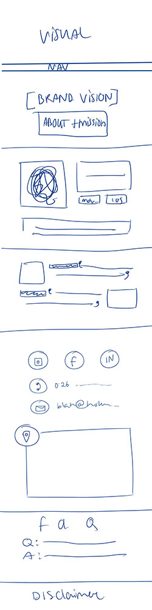
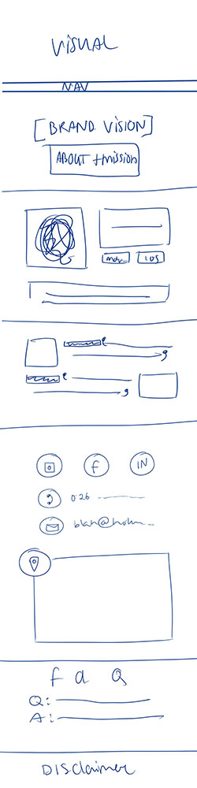

Justification
Click the images to see them in full size.
Ideation and Navigation Flowchart
 


Sketches and Prototypes
Following this, we came up with a prototype to follow through with this idea, as can be seen in the images. Not pictured here: the separate contact page.
Color Palettes and Fonts
We based the colors of the prototype on the color scheme present in the brand road map, later on adding another color, the green shade. This due to getting some feedback from peers that the website looked a bit too business-like and reminded them of a bank more than anything else. Adding the spring-like green helped to deviate a bit from this image. As for the font, we had trouble finding and getting the same font present in the brand road map, so instead we opted for a different font that looks similar, Open Sans.

User Testing
We, then, began user testing. In order to create the best version of what we visioned to be our website we asked test users to provide feedback on what did and did not work in regard to design, general aesthetics and usability.
Method of testing
We found it most fitting to allow our test users to open the website both on a mobile and on a desktop in order for them to view the different versions of it in terms of sizing and responsiveness depending on the screen size the users were working with.
Number of test users
12 users were asked to test our website. This decision was based on that having 3 people each to test our website would be the most efficient given the time frame. Also, having less than 12 would not have given us a broad enough range of opinions of users who could have been asked to assess the usability of our website.
Conditions of test
During the testig our users were not under any time pressure. We let them free to do what they wanted and we told them to give their honest opinion. We wanted our users to feel comfortable when giving feedback to us. We told them that all the input helps us improve our work and we would really appreciate honesty.
Support used
We used a digital prototype to show our users. The digital prototype was a nice way to show how the website flows and to feel how the website navigates through different tabs and pages. This way the users had a real experience of the website and its features.
Testing scenario's
We showed the users a desktop and mobile version of our website. We gave them some time to discover the pages and form their opinions about both the mobile and desktop version of the website.
User Testing Results
Kayleigh
The users I tested all had similar opinions on the website. I will start by elaborating on their thoughts and feelings on the computer version before I move onto the mobile version.
For the computer version of the website (1920x1080 pixel screens), they felt that the website looked professional yet kind of playful. The navigation bar being so obvious from the start is a great thing according to these users, as it makes navigating that much easier. The website comes across as one whole which looks clean. Having the product visible as soon as you open the website was also a plus according to these users, and I quote: “The text on the homepage immediately answers my question: what can I do with this website. Which is really nice!”. Same goes for the buttons to download the app, it makes it as simple as possible and makes it so that the app is easy to find. Having testimonials on the homepage makes one of the users feel as if it is a trustworthy app/website. All participants agreed that the colors made it look ‘fresh’ and ‘clean’, without it being too difficult to read.
As for downsides of the computer/desktop version of the website, one of the participants mentioned the green squiggly lines, saying how they did not necessarily like those, as it reminded them of the lines you get when you spell something wrong. They also mentioned how the ‘prototype’ of the app used on the main page of the website was empty, which they thought was weird. However, this was because I forgot to tell them it was simply a placeholder at this time. Lastly, the participants mentioned how the website does largely connect to our selected target group, but that the font used for the heading/titles seemed a bit too ‘official’ for this age group. One participant also mentioned that they did not necessarily know if the colors would connect that well to the target group, they were neutral on that and could not give a clear answer.
Other, phone version specific feedback mentioned how one of the participants did not know for sure if the hamburger menu made it obvious enough that it was a menu. Other than that, this same participant mentioned how the ‘official’ font did not bother them as much on the phone version as it did on the desktop version.
Wilhelmina
My users, just as Kayleigh's, also had very similar opinions regarding the website, for both the desktop and mobile version.
First off, the users I interviewed all agreed on that the patterned background was cheerful and gave them a good feeling about the website from first glance. The colors, despite not being an obvious first choice, did work well together. The frequently asked questions acted as a good initial guide to dispense any questions the user had. The point of the website was clear and the navbar was a nice touch to help guide them on the website. All the users agreed on that both versions (desktop and mobile) were equally as clean and professional looking
On the other side, there were some aspects of the website that two of the users mentioned they did not enjoy as much. Firstly, the squiggly lines were sort of off putting due to them working well with the overall cohesive look of the website as they do not appear as professional as the rest, according to one test user. This user also mentioned it was a bit off putting that it was not made clear you have to pay for the app as that may give the more “paranoid” website visitors the worry that there are hidden costs involved elsewhere as well. The mission was clearly presented. The contact information was clear, aesthetically pleasing presented and again easy to follow.
On the mobile version, another user also mentioned how they felt there was too much space between the top of the page (where the navbar ends) and where the app is displayed.
Tom
The users I tested were very positive about our website.
To start off, they were very statisfied with the overal look and feeling the website gave. The orange and teal look made them feel like they were in a secure place. The color scheme has been used consistently throughout the website and app which gives the website a professional feeling. Adding to this, they did not like the green underlines and green lines on the website. They found it distracting and not matching the overall look and feeling the website creates.
Another thing my users mentioned is that the header fonts do not really match the fonts used in the paragraphs itself. The contrast is too big and they would like to see a change there. It just reads a bit nicer to have matching fonts on your display. They did say that the fonts are used consistent over the pages which then does make it nicer. They would have also liked to see more contrast at the botom of the page. A orange background with the white text would make it a bit more clear and it matches the site better.
Overall they said we covered all necessary aspects for the website and the navigation through the website was very simple but still professional, which was key for them.